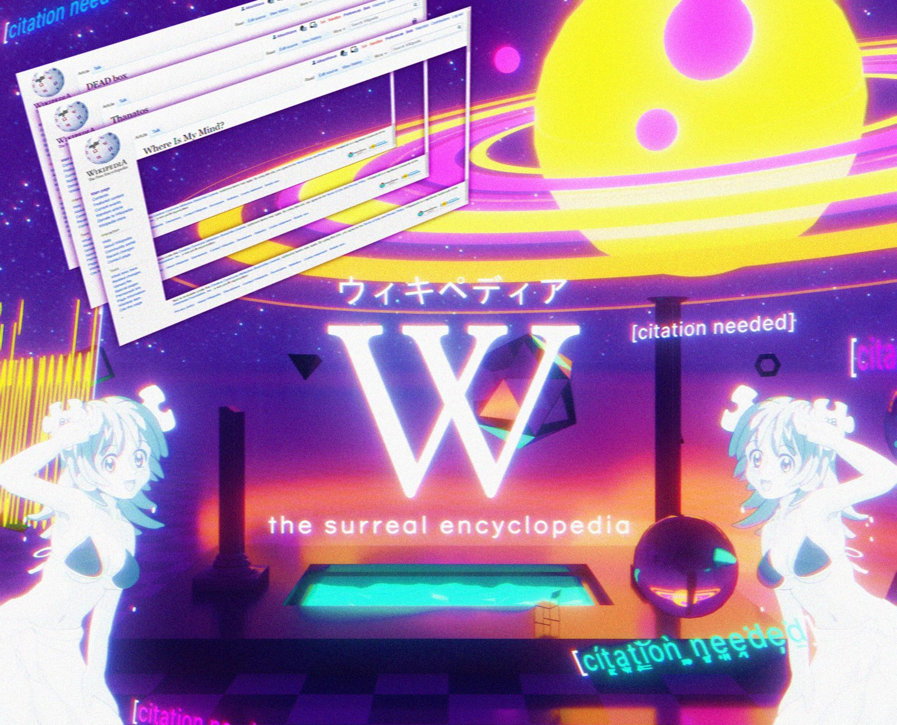

References / Illustration / 383
Wikiwave 00000
A Commons user’s vaporwave collage about Wikipedia: tilted browser windows, a glowing ringed planet, katakana, and a sunset room with a checkered floor.
- Source
- Wikimedia Commons: Wikiwave 00000.png
- Creator
- AtikaAtikawa
- Made
- February 26, 2020
- Style
- Vaporwave (agent-proposed, not yet reviewed by a person)
- Moods
- Dreamlike, ironic, saturated
- Evidence
- Inspected a 1920 × 1554 rendering of the 2100 × 1700 original on Wikimedia Commons and stored a reduced copy.
- Reviewed
- Rights
- Open license, stored. License: CC-BY-SA-4.0. Rights policy

Context
The file page describes it as “an example of vaporwave art,” made by the uploader and “partially based on” the CC BY-SA images of Wikipe-tan and the Wikipedia logo. Wikimedia Commons.
Observed
- Three Wikipedia browser windows float at a steep angle at the upper left, with article titles such as “Where Is My Mind?” and “Thanatos”.
- A yellow ringed planet with pink spots glows at the upper right against a starry violet sky.
- The centre shows a large white serif W, the katakana ウィキペディア above it, and “the surreal encyclopedia” below in widely spaced lowercase.
- A room with dark columns, a glowing cyan pool, and a black-and-violet checkered floor recedes toward an orange sunset.
- Two white-outlined anime girls stand at the left and right edges; “[citation needed]” repeats in cyan, pink, and yellow with scan-line and colour-offset glitches.
- Film grain covers the whole image.
Why it belongs
It shows that the style can be applied to any institution by swapping the quoted interface; here the quoted software is Wikipedia’s own skin.
Borrow
Tilt two or three stacked software windows in perspective at a corner of a hero image, so the interface itself becomes collage material.
Measured
Machine-extracted by tools/image-traits.py on . Full measurement.
- Mean chroma
- 0.35
- Palette
- #f6f6f7 17%
- #4b1a93 8%
- #f7f136 6%
- #5530a9 5%
- #f7f157 4%
- #160a3f 4%
- #2c0f56 4%
- #7c39af 4%

